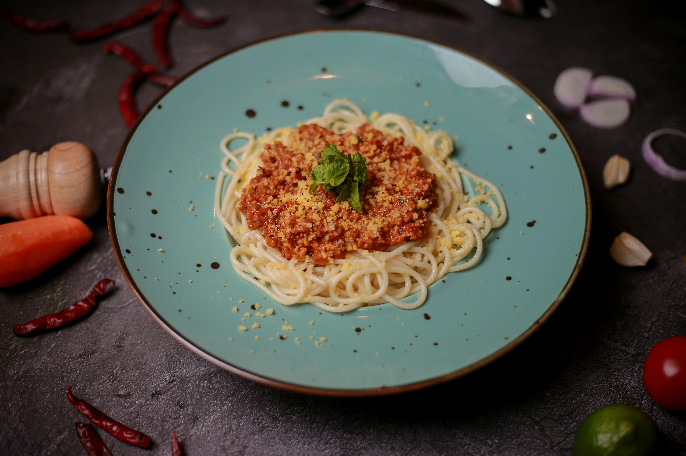
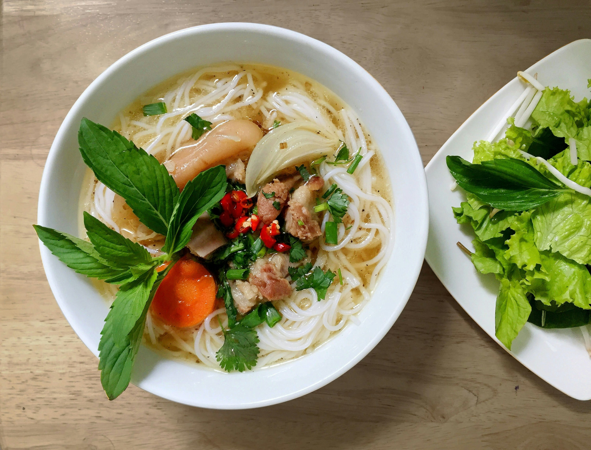

Bestseller
Bestseller
Chili con minimal Carne
Das Hackfleisch versteckt sich zwischen Bohnen, Mais und Tomaten wie ein schüchterner Partygast. Aber hey, es ist da – irgendwo.
Fleisch als Fußnote, Geschmack als Hauptrolle. Hier findest du alle unsere Rezepte, bei denen Gemüse endlich mal im Rampenlicht steht.
Bestseller
Das Hackfleisch versteckt sich zwischen Bohnen, Mais und Tomaten wie ein schüchterner Partygast. Aber hey, es ist da – irgendwo.

90% Gemüse, 10% Fleisch, 100% Identitätskrise. Diese Bolognese fragt sich ernsthaft: Bin ich überhaupt noch eine Bolognese?

Linsen-Burger mit Fleisch-Tarnung. Das bisschen Hackfleisch tarnt sich so gut, selbst Sie werden es kaum finden.

NeuVietnamesische Nudelsuppe, bei der das Rindfleisch so dünn geschnitten ist, dass es praktisch unsichtbar wird. 95% aromatische Brühe.
 Neu
Neu
Jackfruit täuscht Pulled Pork so gut, dass selbst Texaner zweimal hinschauen. 90% pflanzlich, 10% Schwein für die Unentschlossenen.
 Neu
Neu
Koreanischer gebratener Reis mit fermentiertem Kimchi als Star. Der Speck? Hat einen 30-Sekunden-Auftritt und verschwindet dann.